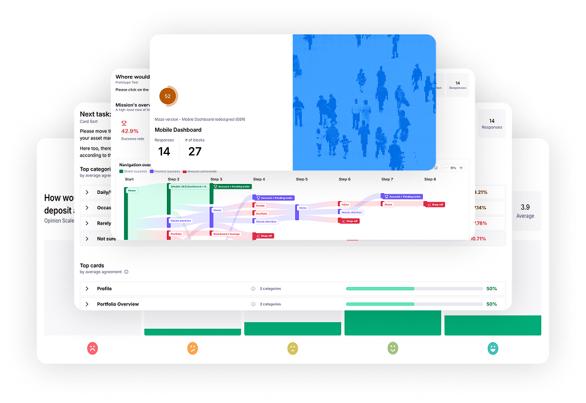

<div class="mobile-journey__beat reveal" aria-label="Mobile — validation">
              <div class="trade-off-switcher trade-off-switcher--split trade-off-switcher--visual-left mobile-validation-maze" aria-label="Validation — Maze study outcome">
                <div class="trade-off-switcher__right mobile-validation-maze__visual">
                  <figure class="mobile-journey__visual mobile-journey__visual--maze">
                    
                  </figure>
                  <p class="period-split__caption">Two-week unmoderated Maze study — full report in Confluence</p>
                </div>
                <div class="trade-off-switcher__left wealth-hub-story__copy present-split__copy">
                  <nav class="workflow-strip wealth-hub-journey" aria-label="Mobile journey" data-journey-program="mobile" data-journey-step="4"></nav>
                  <h3 class="beat__title">Tabbed IA won validation.</h3>
                  <p class="beat__support beat__support--present">Maze · two weeks unmoderated · <strong>92.9%</strong> vs <strong>71.4%</strong> task success</p>
                  <p class="beat__eyebrow">MOBILE · VALIDATION</p>
                  <p class="beat__text beat__text--present">Learning goals documented; recruitment through the live web dashboard. Two-week unmoderated Maze study (Voice-AI hosted) on Hypothesis A and B — tabbed IA selected for visual design.</p>
                  <p class="beat__text">Full setup and results are in Confluence — <a href="https://raisin-jira.atlassian.net/wiki/spaces/Design/pages/5093687339/Mobile+app+dashboard+Maze+Study" target="_blank" rel="noopener">Mobile app dashboard Maze Study</a>. The web dashboard was the recruitment surface; Maze carried the two-week, unmoderated Voice-AI study after I introduced it as Raisin’s research tool for this program.</p>
                  <div class="trade-off trade-off--compact ideate-conflict-tradeoff" aria-label="Validation outcome — hypothesis A selected">
                    <p class="trade-off__label present-block-label">Selected concept · Hypothesis A</p>
                    <div class="trade-off__options">
                      <div class="trade-off__option trade-off__option--chosen">
                        <span class="ideate-conflict-tradeoff__check" aria-hidden="true">
                          <svg width="16" height="16" viewBox="0 0 24 24" fill="none" stroke="currentColor" stroke-width="2.5" stroke-linecap="round" stroke-linejoin="round"><path d="M20 6 9 17l-5-5"/></svg>
                        </span>
                        <p class="trade-off__option-label">A · Tabbed IA</p>
                        <p class="trade-off__option-text"><strong>92.9%</strong> task success — clearer section model; taken into visual design</p>
                      </div>
                      <div class="trade-off__option">
                        <p class="trade-off__option-label">B · Portfolio-card home</p>
                        <p class="trade-off__option-text"><strong>71.4%</strong> task success — strong landing clarity, but less legible primary sections in testing</p>
                      </div>
                    </div>
                  </div>
                <aside class="enablement-callout enablement-surface beat__enablement" aria-label="Enablement — research operating model">
                  <p class="enablement-label">
                    <svg class="enablement-icon" viewBox="0 0 24 24" fill="none" stroke="currentColor" stroke-width="2" stroke-linecap="round" stroke-linejoin="round" aria-hidden="true"><path d="M12 2 2 7l10 5 10-5-10-5z"/><path d="M2 17l10 5 10-5"/><path d="M2 12l10 5 10-5"/></svg>
                    Enablement
                  </p>
                  <p class="enablement-surface__title">Brought Maze into Raisin — validation loops matter</p>
                    <p class="enablement-surface__text">IPP tribe ran research with Maze after I introduced it — proof that unmoderated validation scales beyond one study.</p>
                  <p class="enablement-surface__stat">Maze · IPP tribe · research playbook in use</p>
                </aside>
              </div>
              </div>
            </div>